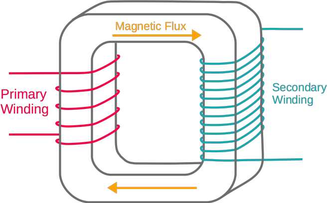
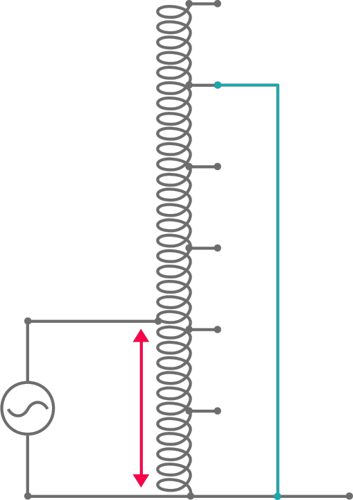
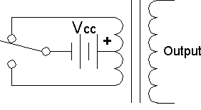
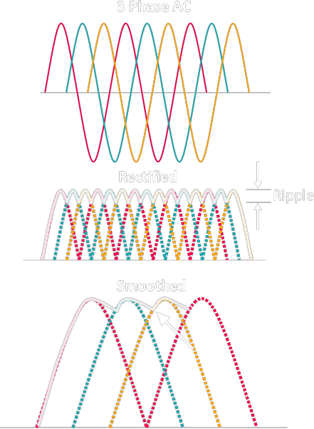

| AC RLC Circuit |
Impedance (Z)
= how HARD current passes through
\[ Z = R + jX \]
where
R = Resistance
X = Reactance All units: Ω Admittance (Y)
= how EASY current passes through
\[ Y = G + jB \]
\[ Y = \frac{1}{Z} \]
where
G = Conductance (how easy a steady current flow through a component)
=\(\large \frac{1}{R}\) B = Susceptance (material susceptance to polarisation) =\(\large \frac{1}{X}\) All units: siemens |
||||||||||||||||
| Hormonics |
Mechanism
|
||||||||||||||||
| Resonant Circuit |
When XL = XC , Ztot = R the circuit is in resonant, the current is MAX :) |
||||||||||||||||
| Transfer Function |
\[ Y(s) = H(s) X(s) \]
where
H = Transfer Function
\( Y = \mathcal{L}\{y(t)\} \), \(y(t)\) = output signal \( X = \mathcal{L}\{x(t)\} \), \(x(t)\) = input signal |
||||||||||||||||
| EMF (Electromotive Force, ε) | = electrical energy that converted from other forms of energy | ||||||||||||||||
| Kirchhoff's circuit laws | = all current going into/out from a point = | ||||||||||||||||
| 3 Phase Electrical Power |
120° apart Line Voltage and Phase Voltage Three Phase Transformer Configuration
Delta Connection
Star Connection |
||||||||||||||||
| Transformer |
Conventional transformer 
|
||||||||||||||||
|
Autotransformer

|
|||||||||||||||||
| Rectifier |
= AC to DC Converter Design [1]
Diodes
|
||||||||||||||||
| Inverter |
= DC to AC Converter Design 
|
||||||||||||||||
| Smoothing Capacitor |

|
||||||||||||||||
| Power Rating | For 3-phase generator, \[ W = VA \] Yet for 1-phase, \[ W = 0.7 VA \] | ||||||||||||||||
| Dielectric |
= material that polarised under electric field | charge do not flow | molecules reorganised/reorient to oppose the applied field |
||||||||||||||||
| Magnetism |
Depends on material's
Types of Magnetism
Coercivity
Hysteresis
|
||||||||||||||||
| Telegrapher's Equations |
\[ \frac{\partial}{\partial x} V(x,t) = -L \frac{\partial}{\partial t} I (x,t) - R~I(x,t) \]
\[ \frac{\partial}{\partial x} I(x,t) = -C \frac{\partial}{\partial t} V(x,t) - G~V(x,t) \]
Primary Line Constants
R = Distributed Resistance
I = Distributed Inductance C = C of Shunt Capacitor G = G of Shunt Resistor Dielectric Material between the 2 conductors Secondary Line Constants
Z0 = Characteristic Impedance
γ = Propagation Constant α = Attenuation Constant β = Phase Constant |